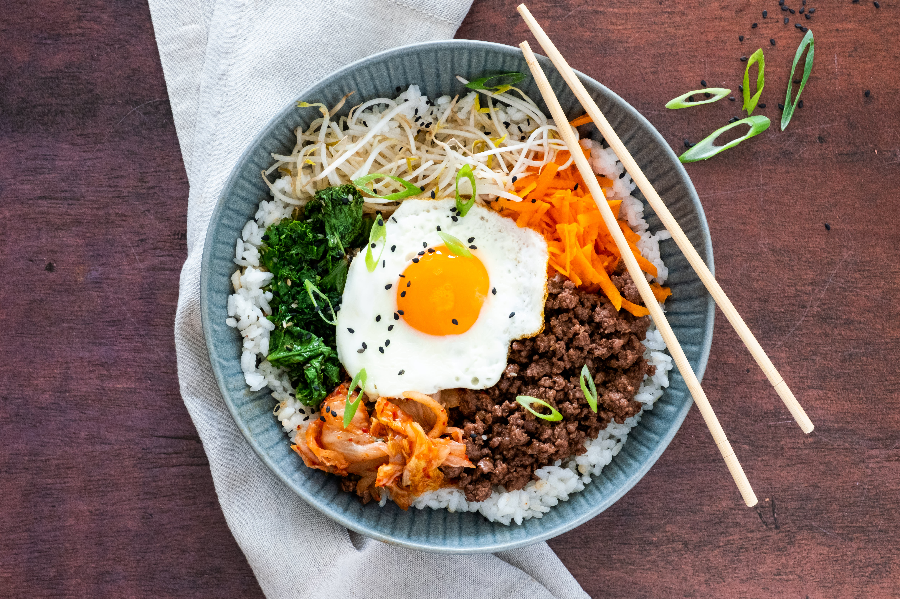

1.Kimchi

Kimchi is a traditional korean food with fegmented vegetables and ofen with nappa cabbbage and radishes.
Kimchi also includes defferent chilliy powers and species tooo. In korea, Kimchi is known as one of the
healthiest food. Well, kimchi is very popular not only in Korea but also worldwide.
2.Bibimbap

Bibimbap is another most popular dishes of s.Korea. Bibimbap is oftenly made with white rice, mixed vegggiess,
meat or beef, fried egg and gochujang sauceee which is known as korean chilly pastee.Bibimbap is also one of the
healthiest and superrb tasty dishes in s.Korea.
3. Ramyeon

Ramyeon is a very popular koraan spicy instant noodles. Ramyoen is also known as ramen. Well, it is
popular with the name of ramen worldwide. Ramen id not only popular in Korea but it's also very popular
worldwide. As ramen is a quick instant noodlesss many students or peoples prefer it as their late night snack.
Tbh i also lovee ramen a lot and prefer it as my late night snackssss.